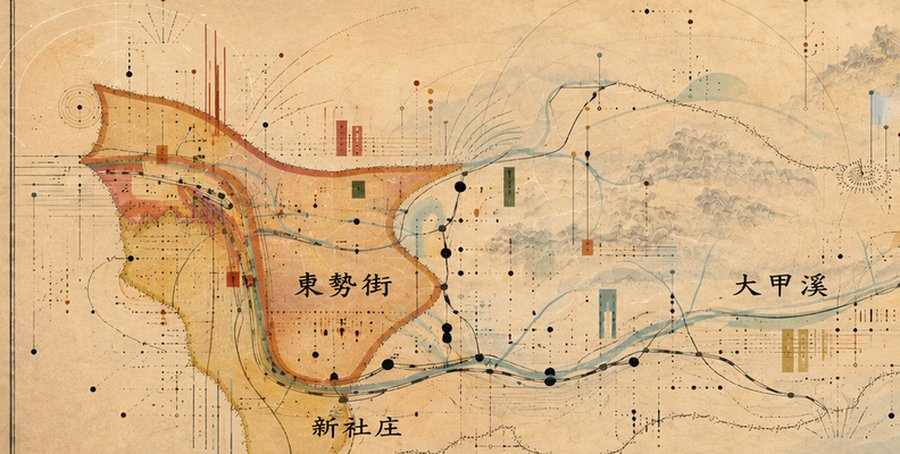
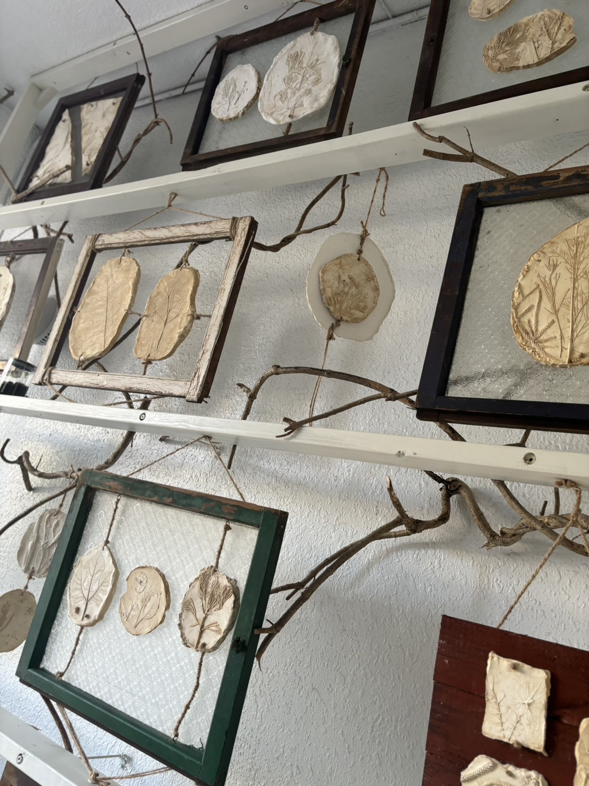
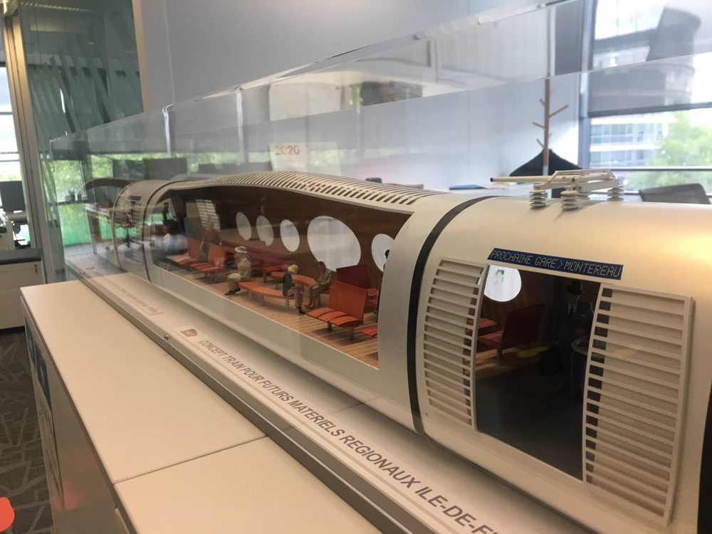

About Me
An experienced Sound Designer and Acoustic Engineer with over 5 years of experience in interactive and immersive audio design. I specialize in creating sound systems for hardware, AR/VR, and non-traditional environments. I am skilled in applying Human-Centered Design and systems-thinking to product development, and I leverage tools like Wwise to build compelling and technically robust audio experiences.
I am also the responsable of Dong Studio (咚莊頭藝術有限公司), an art company I founded with percussionist Hsiao-Tung Yuan (袁曉彤), through which we produce concerts such as Dong's Thing.
Projects Portfolio
《ping-pong-ping-pong》
2025 Nuit Blanche Taipei 台北白晝之夜
Inspired by the native Taiwanese spatterdock (Nuphar shimadae), the project draws from its local name, which sounds identical to "Ping Pong." This phonetic link bridges botanical identity with the "Ping Pong Effect"—a spatial delay used in sound design.
In this interactive installation, when the audience strikes the spherical water tanks, it triggers a physical "Ping Pong" loop. The impact is captured and translated into acoustic vibrations, creating synchronized ripple patterns on the water's surface.
It is a complete sensory cycle, merging biological heritage, linguistic play, and technical audio systems into a single immersive experience.
- Role: Sound Designer / Interactive Systems Engineer
- Exhibition: Daan Forest Park, Taipei

何曉玫 MeimageDance
《芭比的獨白》 Barbie's Monologue
VR Cinema Experience
In this VR film project, I was responsible for the overall sound design. Through meticulous audio processing, the sound complements Ho Hsiao-Mei's unique choreographic language, leading the audience into the private and intimate monologue space of the female interiority.
- Role: Sound Designer
- Director: MeimageDance - Ho Hsiao-Mei
Immersive VR soundscape experience.

Dong's Thing
Founder & Responsable, Dong Studio (咚莊頭藝術有限公司) | 2026
First concert produced by Dong Studio, the art company I founded with percussionist Hsiao-Tung Yuan, with a participatory sound installation controlled by grip balls alongside live flute and marimba.

Da Dong Dong ｜打冬咚
Improvisation Performer | 2025
A winter solstice (冬至) improvised sound performance during 《deledele 刪除製造所》, the joint exhibition of Huang Da-Wei (黃大維) and Hua-Yen Pan at 藝時代畫廊 (ESTYLE ART GALLERY), Taichung (Dec 2025 – Feb 2026).

Spatial Recording and Mixing ｜即興音景
Video & Sound, Dong Studio | 2025
Where rhythm meets space, a new conversation between art and community begins. This performance reimagines an existing sound installation through improvised percussion, inviting local audiences into an unfolding sonic journey. Ambisonic recording (Zoom H3-VR) at Houli Waipu Park, summer 2025, with equipment and technical support from Merry's IPD/BRD team.
Dong Studio: Hsiao-Tung Yuan (percussion), Hua-Yen Pan (video & sound)

Bogosort ｜《Bogo_sort》
Electronic Improvisation Performer | End of 2024
Closing improvisation for artist Huang Da-Wei's (黃大維) solo exhibition 《我不知道》 (I Don't Know), performed live alongside Huang Da-Wei and Ding Chi-Yu. Responding to the absence and uncertainty within the paintings through electronic sound improvisation, the piece turned "deletion" into a flowing dialogue between sound and image — extending the exhibition's core concept of deletion and creation.

My Seasonal Imprints ｜我的四季印記
Co-Creator, Sound Design | 2024
Public art piece created with artist Syu Hong-Hui and students for the General Education Expo at National Formosa University (Dec 2024). Students cast campus plants in plaster inside reclaimed window frames; I designed the sound layer, transforming students' phone recordings of the campus across seasons and embedding contact speakers behind each plaster panel.

Dialogue in Silence
Multichannel Audio | 2024
Nominated for the 2024 FullDome Festival Jena.

Feel Together — Taiwan Sound Lab / C-LAB
Sound Designer | 2023
Developed a wearable device that translates sound into tactile vibrations.

VR Film Indochina
Sound Designer | 2023
Binaural Spatial Audio sound design for the "Umbrella Flying" scene.

French Railway (SNCF)
Intern Sound Designer | 2020
Spearheaded the design of a psychoacoustics-based alarm sound system.
Merry Electronic Health Game
Acoustic Engineer | 2025
Led the development of a patent-pending visual recognition-based rhythm game for sarcopenia.
Get In Touch
Interested in collaboration or have a project in mind? Reach out via email or phone.